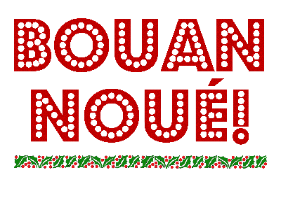

Noué, l'Nouvel An et d'aut's fêtes en Jèrriais
|
Jèrriais |
Angliais |
| |
|
|
Noué |
Christmas |
|
la Sèrvelle dé Noué  |
Christmas Eve |

|
Lé Nouvel An |
New Year |
|
lé tchu d'l'an |
the last day of the year |
|
lé Jour dé l'An |
New Year's Day |

|
eune carte d'Noué |
Christmas card |
|
un cantique d'Noué |
Christmas carol |
|
lé podîn d'Noué |
Christmas pudding |
|
un arbre d'Noué |
Christmas tree |
|
Papa Noué |
Father Christmas |
|
un présent d'Noué |
Christmas present |
|
la cauche dé Noué |
Christmas stocking |
|
un dgiâbliotîn |
Christmas cracker |
|
du housse |
holly |
|
du dgèrrue |
ivy |
|
du dgi |
mistletoe |
|
lé picot |
turkey |
|
la Fête dé Noué |
Christmas festival |
|
Un bouan Noué! |
Merry Christmas! |

|
Pâques |
Easter |
|
lé Véndrédi Saint |
Good Friday |
|
la Saint Swithin |
St. Swithin's |
|
la Saint Valentîn |
St. Valentine's Day |
|
Mardi Gras |
Shrove Tuesday |
|
Mêcrédi des Chendres |
Ash Wednesday |
|
lé paîsson d'Avri |
April Fool |
|
la Toussaint |
All Saints |
|
la Pentecôte |
Whitsun |
|
lé Dînmanche des Rameaux |
Palm Sunday |
|
Halloween |
Halloween |
|
lé Jour d'la Libéthâtion |
Liberation Day |
|
la séthée d'Guy Fawkes |
Guy Fawkes Night |
|
la Fête des Méthes |
Mothers' Day |

Viyiz étout:
- Cantiques dé Noué - Christmas Carols in Jèrriais
- Bouan Noué!
- La nativité clyiquabl'ye
- Eune pièche dé Nativité
- Lé podîn d'Noué
- Lé Podîn d'Noué
- Men podin d'Noué
- La mangeaille dé Noué d'aut'fais
- Eune Gâche dé Noué
- Tout chein qué j'veurs pouor man Noué...
- Les pithots et les picots
- La Longue Veil'ye
- Noué
- À Noué l'temps pâssé
- Histouaithe dé Sèrvelle dé Noué
- Complyîments d'la saison!
- Les complyîments d'la saison
- All'-ous crier Noué?
- Les d'vis du Bouan'homme George
- Les d'vis du Bouan'homme George
- À forche d'truncer, Noué veint et s'en va!
- Noué
- Bouan Noué!
- Noué
- Noué
- Noué
- En reunminnant
- Un Bouon Noué à Portinfé
- An Invitation for Christmas
- Christmas at Portinfer
- Lé Jour dé Nouë
- Un Bouon Nouë
- Ph'lip and Merrienne find some friends
- Ch'est Noué
- Nouë et la Merrienne
- Des problèmes au Portînfé
- Comme le temps s'pâsse - aut'fais et agniet
- Lé Caouain à Noué 1923
- Lé Caouain à Noué 1928
- J'n'sais pon tchi sorte d'Noué que vous avez passé, buannes gens
- Lé Caouain à Noué 1935
- Ch'a tréjous 'té l'habitude du Caouain le Samedi d'Noué
- Touos l's ans à Noué j'ai ieu l'habitude d'adressi à mes lecteurs des bouans souhaits
- "Here's Father Christmas!"
- Ou z'allez être désappointès, mais pas pus qu'mé
- Je voudrais saver, mé
- J'étais malade par aver mangi du stoffing
- Lé Caouain et Father Christmas
- Quand Papa Noë veindra
- La modestie m'empêche...
- J'sis un bein vilain ouêsé
- Moralisings on the Seasons Festivities
- Christmas Eve Adventures
- Greeting from our Happy Family
- Mauvaise Affaithe
- La gâzette vos souhait' un bouan Noué
- Noué siez Cliément d'Caen!
- Notr' Noué à l'Europe
- Quand Maît'e Cliément d'Caen vînt hier cherchi s'n Almonas
- San Diné d'Noué
- Lé vrai message de Noué
- Noué tch'appraiche
- Les Cartes dé Noué
- Un Bouan Noué
- Bouan Noué! - des mots muchis
- Sèrvice dé Neu Léçons et Cantiques dé Noué
- Sèrvice dé Neu Léçons et Cantiques dé Noué 2003
- Sèrvice dé Neu Léçons et Cantiques dé Noué 2004
- Sèrvice dé Neu Léçons et Cantiques dé Noué 2005
- Séthée d'Noué
- Noué 2000 - L'Assembliée d'Jèrriais
- Un raide bouon Noë
- Not' Noé
- L'Samdi d'Noué
- Quand j'tais janne
- L'Vièr Noué
- À touos nos Membres et nos Anmîns
- Des portraits pouor Noué
- Tch'est qu'i' y'a dans les cauches dé Noué?
- Un pliaîsi bein vite pâssé
- Dansons tout l'tou dé l'arb' dé Noué!
- J'sis grée pouor Noué
- Lé Drédillet d'Noué
- La Sèrvelle dé Noué
- Mêfi'-ous! Ch'est la Sèrvelle dé Noué
- La Sèrvelle dé Noué 2016
- Quand tchi qu'Noué c'menche?
- Au Marchi d'Manchêtre
- Lé 25 d'Dézembre 2016
- J't'embraich'chai souos l'dgi
- Noué
- Noué en Jèrri
- La Sonn'nie d'Clioches à Noué
- Une Séthèe d'Noué
- En Ethous!!
- Cartes de Noué
- Bouan Noué!
- Un bouan Noué
- A Elie
- Ermercîments
- P'tits cadeaux!!!
- Pour Noué
- Noué 1920
- La Saint Nic'lesse
- À haut à marchi
- Un Lô-lô d'Noué
- Romeril
- Noué
- La Lettre Jèrriaise
- Lettre Jerriaise Samedi l'20 d'Dézembre 2003
- Bouan Noué! - un quiz
- Bouan Noué! - un quiz
- Des cantiques dé Noué - un quiz
- Lé Tchu dé l'An
- Le Vier Temps - Auld Lang Syne
- Not' Bouon Vieir Temps - Auld Lang Syne (acouo)
- L'amour du vièr temps
- Le Bouan Vier Temps
- Un' Buonn' Nouvelle Année
- Le Nouvel An
- La Nouvelle Année
- La Nouvelle Année
- Pour le Nouvel An
- J'vos souhait' eunne Bouanne Année
- Lé Caouain au Nouvel An
- Rêsolutions d'Nouvel An
- Rêsolutions
- Les Rêsolutions
- 1901
- 1900
- Fin d'annèe
- J.F.(T.)U. Ltd.
- Eune Bouanne Année dans la Gâzette du Sé
- En enviant unn' carte dé souhaits pour la Nouvelle Année
- La Nouvelle Année
- La Nouvelle Année
- Prédictions pour dziexs-neu' chents onze
- Un brin en patois
- Les d'vis du Bouan'homme George
- Souhaits d'nouvelle année
- La Nouvelle Année
- Mé, qui n'a pas ieu un seule Christmas-box
- Sterling Advice for the Coming Year
- Bouonnes résolutions
- Lé Jour dé l'An
- Une Bouonne Année
- Une Bouonne Année
- Eune Bouonne Année
- À chu Nouvel An qué j'n'éthais pon veu
- La Cand'leu
- Mardi Gras
- La Chanson du Mardi Gras
- Oeune Invitation
- Au Mardi Gras
- Des vielles couôteunmes et l'Tchithême
- Lé Vendredi Saint
- Le Vendrédi Saint à Portinfé
- Lé Vendrédi Saint
- Vendredi Saint
- Vendredi-Saint au Portinfé
- Le Vendredi-Saint
- Le Vendredi Saint
- Le Vendredi Saint
- Des changements au Vendrédi Saint
- Tchi Vendrédi?
- Des ban'ses crouaîsies
- Ph'lip and Merrienne Discuss Good Friday
- Pâques
- Lé vrai message dé Pâques
- Pâques au Portinfé
- La S'maine de Pâques
- La S'maine Sainte
- Chutte sémaine sainte, l'air sembl'ye lithant
- Lé Jour dé la Libérâtioun
- La Saint Valentîn
- La Carte d'Valentinne
- Saint Valentîn - des mots muchis
- La farcéthie
- Paisson d'Avri
- Lé Paîsson d'Avri
- La Folle d'Avoût
- La Faîsezie d'Nièr-Beûrre
- Halloween
- Halloween - des mots muchis
- La Tcheût'tie dé Halloween
- Halloween et la Séthee d'Guy Fawkes
- Papa m'a explyitchi tout entouor Halloween!
- À la Séthée ès Chorchièrs
- La Cânchon du chorchéthon
- Mêfi'-ous!
- La Tcheût'tie d'la Séthée ès Chorchièrs
- La Zombinn'nie
- Les Béluets
- Gaï Faxe, Tondre-Baxe
- Guy Fawkes à St. Ou, 1913
- 'Guy Fawkes' lé temps passé
- La séthée d'Guy Fawkes
- Entouor la séthée d'Guy Fawkes
- Guy Fawkes
- Les traditions d'la Séthée d'Guy Fawkes
- La Séthée d'Guy Fawkes
- Guy Fawkes
- Guy Fox
- Guy-Fawkes à St.-Ouen
- Guy Fawkes 1909
- Les feux d'artifice
- Lé 5 d'Novembre auve la Section de la langue Jèrriaise
- Lé chîn d'Novembre
- Les Séthées dé Feux d'Jouaie, à la mode des Quarantaines
- Un pénîn pouor lé bouonhoumme!
- La Séthée d'Papa Fawkes
- Bouôn annivèrsaithe
- Man Jour dé Naissance
- Merrienne has a birthday
- À la Sainte Lucie
- La St. Jean en Jèrri aut'fais
- Saint Swithin
- St. Swithin
- La Saint George
- La Crouaix d'St. Patrice
- La Saint Dâvi
- Du Pouothé, des Pipots et un Dragon
- La Saint André
- La St. Brélade
- La Fête dé St. Patrice
- La Fête des Méthes
- Bouôn Diwali!
- La Nouvelle Année Chinnouaise
- Tchiques vielles couôteunmes
- Des Festîns Hors Jèrri
- La Journée Ûropéenne des Langues 2013